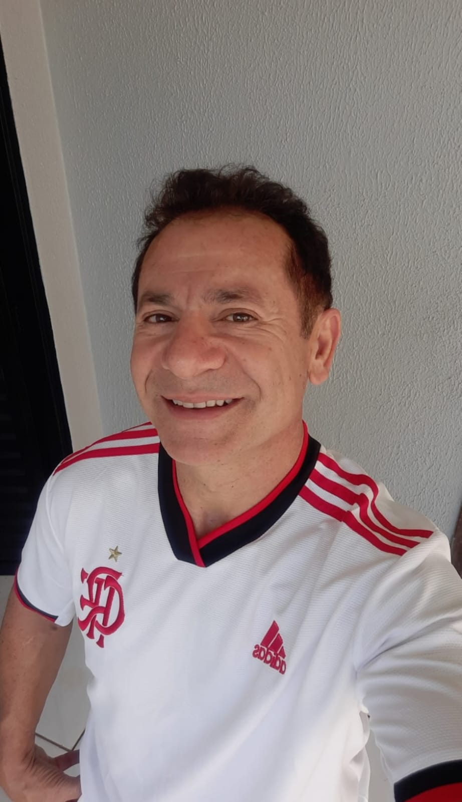
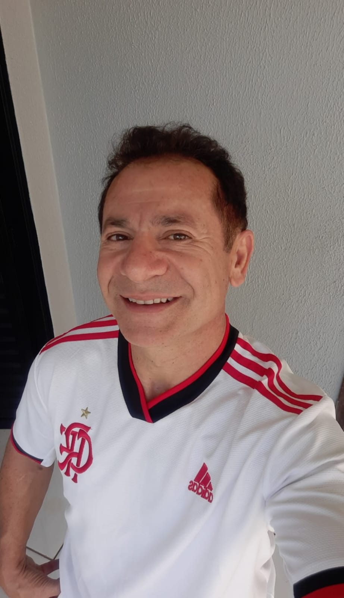

Mãe (paula thays machado) uma podologa dedicada que passa maior parte do seu tempo trabalhando para sustentar seus filhos, nos tempos livres gosta de sair com as amigas para dançar.
Nasceu e cresceu em Porto Alegre, RS, viveu sua infância morando em diversas casas devido a crise da década de 80, em sua vida adulta decidiu fazer uma viagem para a praia, onde conheceu seu futuro marido, ela decidiu que queria viver o amor e fugiu de casa se mudando para Londrina com seu novo amor. Viveu vários anos ao lado dele e teve três filhos com o mesmo.
Pai (ednaldo oliveira) chefe de uma empresa filial da Copel, mora em Campo Mourão, no seu tempo livre gosta de participar de competições de ciclismo.
Nasceu e cresceu em Lerrovil, uma cidade no interior do Paraná, na sua infância viveu cuidando dos animais e plantações da fazenda de sua família, quando adulto decidiu abrir um comércio de locação de Jet Ski em uma praia de Santa Catarina, onde acabou conhecendo sua futura esposa.
 
